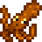
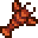
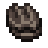

Beach
Spring
 Anchovies – 24/7
Anchovies – 24/7
Eel - Night, when raining
Halibut – 6.00 a.m to 11.00 a.m & 7.00 p.m to 2.00 a.m
Herring - 24/7
Summer
 Crimsonfish (Legendary) - 24/7
Crimsonfish (Legendary) - 24/7
Halibut – 6.00 a.m to 11.00 a.m & 7.00 p.m to 2.00 a.m
Octopus - 6.00 a.m to 1.00 p.m
Pufferfish –12.00 p.m to 4.00 p.m
Red Mullet – 6.00 a.m to 7.00 p.m
Red Snapper – 6.00 a.m to 7.00 p.m, when raining
Super Cucumber – 6.00 p.m to 2.00 a.m
Tilapia – 6.00 a.m to 2.00 p.m
Tuna – 6.00 p.m to 7.00 p.m
Fall
 Albacore - 6.00 a.m to 11.00 a.m & 6.00 p.m to 2.00 a.m
Albacore - 6.00 a.m to 11.00 a.m & 6.00 p.m to 2.00 a.m
Anchovies – 24/7
Eel - Night, when raining
Tilapia – 6.00 a.m to 2.00 p.m
Red Snapper – 6.00 a.m to 7.00 p.m, when snowing
Sea Cucumber – 6.00 p.m to 2.00 a.m
Super Cucumber – 6.00 p.m to 2.00 a.m
Winter
Albacore - 6.00 a.m to 11.00 a.m & 6.00 p.m to 2.00 a.m
Halibut – 24/7
Herring - 24/7
Red Mullet – 6.00 a.m to 7.00 p.m
Sea Cucumber – 24/7
 Squid - 6.00 p.m to 2.00 a.m
Squid - 6.00 p.m to 2.00 a.m
Tuna – 6.00 p.m to 7.00 p.m
All Year
Green Algae – 24/7
Sardines – 6.00 a.m to 7.00 p.m
 Seaweed – 24/7
Seaweed – 24/7
Ponds
Spring
 Catfish – 24/7, when raining
Catfish – 24/7, when raining
Summer
Fall
Catfish – 24/7, when raining
 Angler (Legendary) - 24/7, in pond north of Joja Mart
Angler (Legendary) - 24/7, in pond north of Joja Mart
Winter
Catfish – 24/7, when snowing
Perch – 24/7
Pike – 24/7
All Year
 Carp – 24/7
Carp – 24/7
 Chub – 24/7
Chub – 24/7
 Bullhead – 24/7
Bullhead – 24/7
Periwinkle – 24/7 (Crab Pot)
Snail – 24/7 (Crab Pot)
River
Spring
Catfish – 6.00 a.m to 12.00 a.m, when raining
Shad - 9.00 a.m to 2.00 a.m, when raining
 Smallmouth Bass – 24/7
Smallmouth Bass – 24/7
Sunfish – 6.00 a.m to 7.00 p.m, when sunny
Summer
Dorado - 6.00 a.m to 7.00 p.m
Rainbow Trout – 6.00 a.m to 7.00 p.m, when sunny
Shad - 9.00 a.m to 2.00 a.m, when raining
Sunfish – 6.00 a.m to 7.00 p.m, when sunny
Fall
Catfish – 6.00 a.m to 12.00 a.m, when raining
Lingcod – 24/7
Salmon – 6.00 a.m to 7.00 p.m
Shad – All Day, when raining
Smallmouth Bass – 24/7
Tiger Trout – 6.00 a.m to 7.00 p.m
Walleye – 12.00 p.m to 2.00 a.m when raining
Winter
Chub - Day
Lingcod – 24/7
Perch – Day or Night
Pike – Day or Night
Tiger Trout – 6.00 a.m to 7.00 p.m
Walleye – 10.00 p.m to 2.00 a.m, when snowing
All Year
 Bream – 6.00 p.m to 2.00 a.m
Bream – 6.00 p.m to 2.00 a.m
Other Spots
Arrowhead Island
Glacierfish (Legendary) - 6:00 a.m to 10:00 p.m, only during Winter
Desert
Sandfish - Between 6:00 a.m. and 10:00 p.m; year-round
Scorpion Carp - Between 6:00 a.m. and 10:00 p.m; year-round
Forest Pond - Secret Woods Pond
Carp - 24/7, year-round
Catfish - Mornings during Spring and Fall
Walleye - Afternoon and Night during Fall
Woodskip - 24/7, year-round
The Mines
Ghostfish – Floors 20, 60 and 100; 24/7, year-round
Ice Pip – Floor 60; 24/7, year-round
Lava Eel – Floor 100; 24/7, year-round
Stonefish – Floor 20; 24/7, year-round
Sturgeon – Lake outside the mines; All Day, Summer and Winter only
Sewers
Mutant Carp (Legendary) - 24/7, year-round
Lake outside of mines
Legend - 6:00 a.m. to 10:00 p.m., in the lake near Marnie's Ranch, Spring
Largemouth bass - 6.00 a.m to 7.00 p.m, year-round
Crab Pot Fish
Some fish are only catchable using a baited crab pot. All of these creatures can be used as components in the Crab Pot Bundle
Ocean
Lobster
 Clam
Clam
 Crab
Crab
Cockle
Mussel
Shrimp
 Oyster
Oyster
Freshwater
 Crayfish
Crayfish
Snail
Periwinkle